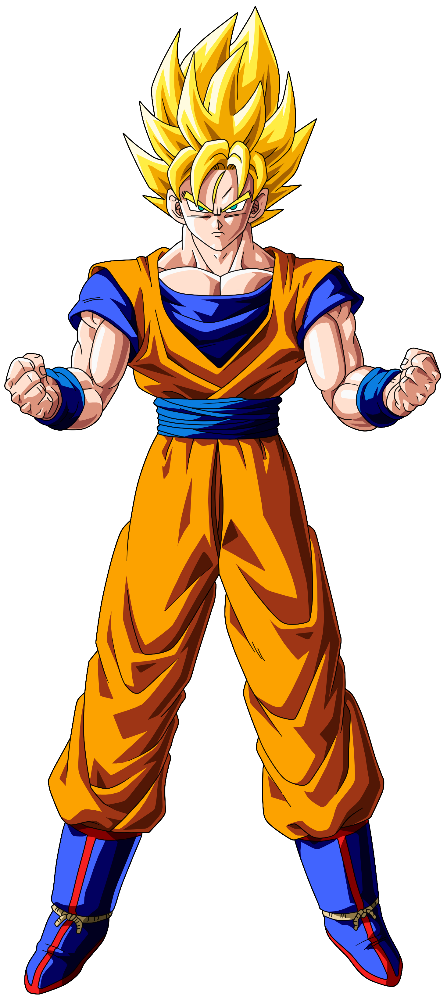

Goku é um dos personagens mais icônicos e amados da franquia Dragon Ball, e sua trajetória em Dragon Ball Z é repleta de aventuras, desafios e poderosos inimigos. Nascido no Planeta Vegeta, Goku foi enviado à Terra quando ainda era um bebê, após a destruição de seu planeta natal. Ele foi adotado por um homem chamado Son Gohan, que o criou como seu próprio neto.
Ao longo de sua trajetória, Goku mostra características marcantes, como sua inocência, lealdade, amor pela luta e um apetite voraz. Ele está sempre buscando se tornar mais forte e superar seus próprios limites, lutando tanto para proteger o mundo quanto para se desafiar. Goku se tornou um símbolo de coragem e determinação, deixando um legado duradouro na história dos animes e mangás.
Desde jovem, Goku mostrou talento e paixão pela luta, e ele treinou arduamente ao longo dos anos para se tornar um guerreiro cada vez mais forte. Ao longo de sua jornada em Dragon Ball Z, Goku se envolve em batalhas épicas e luta para proteger o planeta Terra e seus entes queridos de ameaças poderosas.
Uma das primeiras grandes sagas de Goku em Dragon Ball Z é a Saga Saiyajin, na qual ele descobre suas verdadeiras origens e enfrenta seu irmão, Raditz. Mais tarde, ele viaja para o Planeta Namekusei para ajudar seus amigos a coletar as Esferas do Dragão e derrotar os temíveis vilões Freeza e suas forças. Durante essa batalha, Goku alcança a lendária transformação conhecida como Super Saiyajin.
Após a Saga de Namekusei, Goku retorna à Terra e enfrenta ameaças como os Androides criados pelo Dr. Gero além de enfrentar o temível Cell. Durante essas batalhas, Goku alcança níveis de poder ainda mais incríveis e no final morre pela segunda vez se sacrificando para salvar seu filho e a Terra de uma auto explosão de Cell
No arco final de Dragon Ball Z, conhecido como Saga Majin Boo, Goku enfrenta um dos vilões mais poderosos da série, Majin Boo. Nesta batalha, Goku alcança a forma Super Saiyajin 3, revelando um poder incrível. Ele trava uma luta desesperada para salvar o mundo e seus entes queridos da destruição iminente finalizando a luta com uma gigantesca genki-dama formada por todos os seres humanos que foram influenciados por Mr. Satan a ajudar goku.